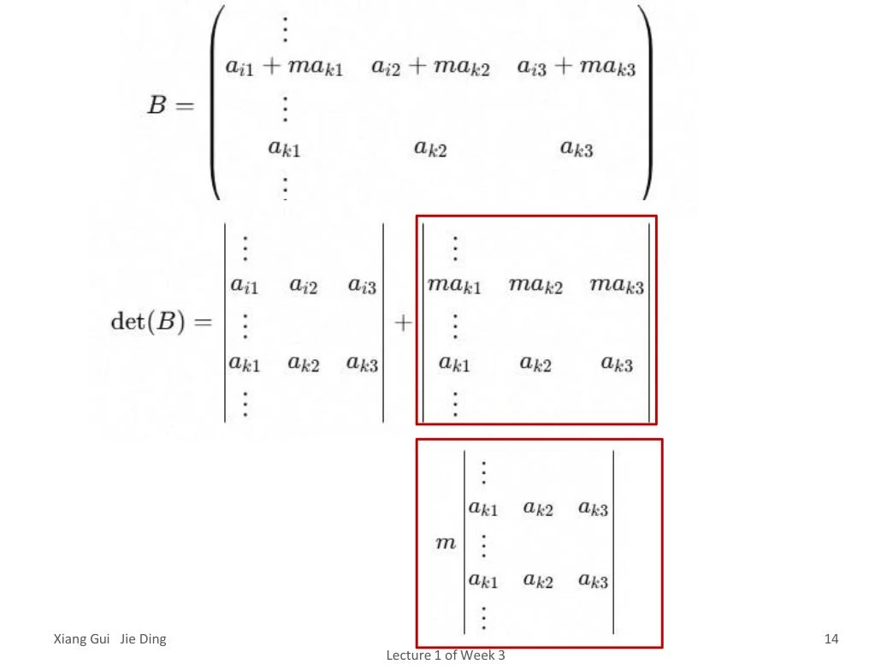
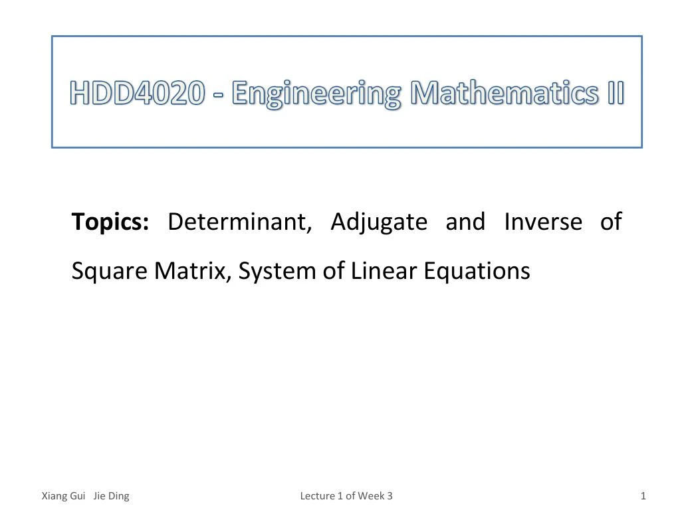

HDD4020 工程数学 II · 第 05 / 08 讲
第 3 章 · 行列式、伴随矩阵与逆矩阵
Determinant, Adjugate and Inverse of a Square Matrix
所属章节：第 3 章 行列式与线性方程组
资料来源 · 1 项 / 已附 0 项
Topic 3/EMII_Week3_Lecture1.pdf未附原文件
未附文件仅列原始名称；版本与核对日期由维护者登记。
本节在整门课中的位置
上一讲学完了矩阵的四则运算，但有一件事没解决：给定矩阵 A 与向量 b，方程 Ax = b 里的 x 怎么求？答案依赖一个数——行列式（determinant）。行列式不为零，矩阵才可逆，方程才有唯一解；行列式为零，矩阵「奇异」，方程要么无解、要么有无穷多解。
因此本节的主线是：先学会算行列式（包括余子式展开），再学会用伴随矩阵求逆，最后把逆矩阵用到线性方程组的求解上。这条链条在下一讲会被「高斯消元」补充——消元法不需要逆矩阵，也能判断解的情形。
学完本节你应当能够：
- 计算 2×2 与 3×3 行列式，并写出 n×n 的余子式展开公式
- 写出余子式
M_ij与代数余子式A_ij = (−1)^{i+j}M_ij，并画出符号棋盘 - 使用行列式的八条性质化简计算（换行变号、两行相同为零、线性性、行倍加不变）
- 判断方阵是奇异还是非奇异
- 用「先转置、再换成代数余子式」两步法求伴随矩阵
- 用
A⁻¹ = adj(A)/det(A)求逆矩阵，并用它解Ax = b
与前后讲的衔接：本节的求逆公式对 3×3 以上就要算九个代数余子式，工作量很大；下一讲的高斯消元提供了更省力的解法，而且能处理「逆不存在」的情形。所以本节的价值在于概念（可逆的判据）与小矩阵的快速求逆。
5.1 行列式：方阵的一个数
只有方阵才有行列式。方阵 A 的行列式记作 det(A) 或 |A|，它是一个由矩阵元素决定的数。
2×2 的情形。若 A = [[a, b], [c, d]]，则
det(A) = ad − bc
课件例：A = [[2, 1], [−1, 3]]，det(A) = 2×3 − 1×(−1) = 7。
这个公式要背成「主对角线乘积减副对角线乘积」。它是后面所有性质的出发点，也是 2×2 求逆公式的核心。
5.2 3×3 行列式与余子式展开
3×3 行列式按第一行展开：
det(A) = a₁₁·det[[a₂₂, a₂₃], [a₃₂, a₃₃]] − a₁₂·det[[a₂₁, a₂₃], [a₃₁, a₃₃]] + a₁₃·det[[a₂₁, a₂₂], [a₃₁, a₃₂]]
注意三个系数的符号是 + − +。这个符号不是随意规定的，而是来自「代数余子式」的定义。
余子式（minor）M_ij：从 A 中划掉第 i 行与第 j 列后剩下的子矩阵的行列式。
代数余子式（co-factor）A_ij：A_ij = (−1)^{i+j} M_ij。
符号 (−1)^{i+j} 排成一个棋盘：
+ − +
− + −
+ − +
课件正是用这张「place sign」棋盘来说明符号的来源。记住左上角是 +，同行同列交替即可。
5.3 n×n 的一般展开公式
对 n×n 矩阵，按任意一行或任意一列展开结果都相同：
按第 i 行展开：det(A) = Σ[j=1…n] a_ij · A_ij
按第 j 列展开：det(A) = Σ[i=1…n] a_ij · A_ij
「任意一行或列都可以」是极其有用的自由度：计算时应该挑零最多的那一行或列展开，因为零项不用算。
5.4 例：三阶行列式的两种展开
计算 A = [[2, 2, −3], [−3, 1, 0], [1, 4, −2]] 的行列式。
按第一行展开。
M₁₁ = det[[1, 0], [4, −2]] = −2，M₁₂ = det[[−3, 0], [1, −2]] = 6，M₁₃ = det[[−3, 1], [1, 4]] = −13
det(A) = 2(−2) − 2(6) + (−3)(−13) = −4 − 12 + 39 = 23。
按第一列展开（验算）。
M₂₁ = det[[2, −3], [4, −2]] = −4 + 12 = 8，M₃₁ = det[[2, −3], [1, 0]] = 3
det(A) = 2(−2) − (−3)(8) + 1(3) = −4 + 24 + 3 = 23。
两种展开给出同一个数 23，与课件一致。这也说明「按哪一行展开」只影响计算量，不影响结果。
5.5 行列式的八条性质
这些性质是化简与判断的主要工具，可以分成三组记：
第一组：与乘法、转置的关系。
det(AB) = det(A)·det(B)：乘积的行列式等于行列式的乘积。det(A) = det(Aᵀ)：矩阵与它的转置行列式相同。因此行与列的地位完全对等，凡是关于行的性质，对列同样成立。
第二组：换行与重复行。
- 交换两行（或两列），行列式变号：
det(交换后) = −det(原)。 - 若有两行（或两列）完全相同，则行列式为 0。
- 若某一行（或列）全是零，则行列式为 0。
- 若某一行（或列）是其他行（或列）的线性组合（例如第三行 = 第一行 + 2×第二行），则行列式为 0。
第三组：线性性与行变换。
- 线性性：若某一行的元素是两组数之和，行列式可拆成两个行列式之和（其余行不变）。
- 某一行（或列）的所有元素同乘 k，行列式也乘 k。
- 把某一行的 k 倍加到另一行，行列式不变——这条最常用，因为它不改变行列式的值。
5.6 例：det(AAᵀ) 与 det(A)=5
课件例：设 A 是方阵，det(A) = 5，求 det(AAᵀ)。
det(AAᵀ) = det(A)·det(Aᵀ)（用乘积性质）
= det(A)·det(A)（用转置性质 det(Aᵀ) = det(A)）
= 5 × 5 = 25。
这类题的思路是「把不认识的量拆成认识的量的乘积」。考场上见到 det(A²)、det(A⁻¹)、det(kA) 都是同一个套路——后者注意是 kⁿ·det(A)（n 阶方阵，每行都乘了 k）。
5.7 例：换行变号
课件用一个三阶「置换矩阵」演示换行变号：
D = [[0, 0, 1], [1, 0, 0], [0, 1, 0]]
交换第 1、2 行，得 [[1, 0, 0], [0, 0, 1], [0, 1, 0]]，这一步使 det 变号；再交换第 2、3 行，得单位阵 I，又变一次号。两次变号抵消，故 det(D) = det(I) = 1。
这个例子的价值在于说明：只要能把矩阵通过换行变成单位阵，就能读出它的行列式（换几次行，符号就是 (−1) 的几次方）。
对照组：[[1, 2, 3], [1, 2, 3], [1, 1, 1]] 前两行完全相同，故 det = 0，不需要任何计算。
5.8 例：线性性造出零
课件例：D = det[[1, 2, 3], [4, 5, 6], [10+2, 20+4, 30+6]]。
按第三行的线性性拆成两个行列式：
D = det[[1, 2, 3], [4, 5, 6], [10, 20, 30]] + det[[1, 2, 3], [4, 5, 6], [2, 4, 6]]
第一个：第三行 = 10 × 第一行，故为 0；第二个：第三行 = 2 × 第一行，故为 0。于是 D = 0 + 0 = 0。
这条思路说明了「第三行是前两行的线性组合 → 行列式为 0」的几何含义：三行线性相关，矩阵把三维空间压成了低维，体积（行列式）自然为零。
5.9 例：判断行列式为零
课件 Task：求 det[[2, 1, 1], [1, 3, 2], [4, 7, 5]]。
方法一（直接展开）。
2(3×5 − 2×7) − 1(1×5 − 2×4) + 1(1×7 − 3×4) = 2(1) − 1(−3) + 1(−5) = 2 + 3 − 5 = 0。
方法二（找线性关系）。观察第三行：(4, 7, 5) = (2, 1, 1) + 2(1, 3, 2)。第三行是第一行加第二行的 2 倍，故行列式为 0。
答案 0，与课件一致。方法二只用一次心算，比展开快得多——这也是「先看结构，再动笔」的价值。
5.10 奇异与非奇异
方阵 A 若 det(A) = 0，称为奇异（singular）；若 det(A) ≠ 0，称为非奇异（non-singular）或可逆（invertible）。
课件例：A = [[6, 18], [2, 6]] 的 det = 36 − 36 = 0，奇异；B = [[6, 8], [2, 6]] 的 det = 36 − 16 = 20，非奇异。
奇异这个词很直观：这类矩阵会把平面上的不同点「压」到同一条线上，变换过程不可逆，所以你没法从结果反推原来是什么。
5.11 伴随矩阵：两步法
方阵 A 的伴随矩阵（adjugate，或 classical adjoint）记作 adj(A)，由两步得到：
- 先求 A 的转置
Aᵀ - 把
Aᵀ的每个元素替换成它在 A 中的代数余子式
为什么必须先转置？因为代数余子式 A_ij 在伴随矩阵里要放到第 j 行第 i 列（位置互换），而「先转置再逐位替换」恰好实现了这个互换。漏掉转置是最常见的错误。
课件例：A = [[1, 1, 0], [0, 2, −1], [2, 1, 3]]。
转置：Aᵀ = [[1, 0, 2], [1, 2, 1], [0, −1, 3]]。
逐位替换成代数余子式，得
adj(A) = [[7, −3, −1], [−2, 3, 1], [−4, 1, 2]]
逐项核对：7 是 a₁₁ 的余子式 det[[2, −1], [1, 3]] = 6 + 1 = 7；−3 是 (−1)^{1+2}·det[[0, −1], [2, 3]] = −2？——注意这里按伴随矩阵的排布，第 1 行第 2 个元素对应的是 A₂₁，其值为 (−1)³·det[[1, 0], [1, 3]] = −3。逐位核算一遍就能体会「位置互换」的含义。
A 的行列式：按第一行展开 det(A) = 1(6 + 1) − 1(0 + 2) + 0 = 5。
5.12 逆矩阵：公式与三条性质
若 A 非奇异，它的逆矩阵（inverse）A⁻¹ 由
A⁻¹ = adj(A) / det(A)
给出。逆矩阵满足三条性质：
A⁻¹A = AA⁻¹ = I（定义）；det(A⁻¹) = 1/det(A)（由det(A)·det(A⁻¹) = det(I) = 1得到）；(A⁻¹)ᵀ = (Aᵀ)⁻¹（转置与求逆可以交换顺序）。
注意这里的除法是「除以一个数」：adj(A)/det(A) 表示把伴随矩阵的每个元素都除以 det(A)。写成 adj(A)·det(A) 是典型错误。
2×2 的快速公式（必须背下来）：若 A = [[a, b], [c, d]]，det(A) = ad − bc，则
A⁻¹ = (1/(ad − bc))·[[d, −b], [−c, a]]
口诀：主对角线互换、副对角线变号、整体除以行列式。
课件 Task：A = [[1, 2], [3, 7]]，det = 7 − 6 = 1，故 A⁻¹ = [[7, −2], [−3, 1]]，与课件答案一致。
5.13 逆矩阵的完整算例
对上面那个三阶矩阵，det(A) = 5，adj(A) = [[7, −3, −1], [−2, 3, 1], [−4, 1, 2]]，于是
A⁻¹ = [[7/5, −3/5, −1/5], [−2/5, 3/5, 1/5], [−4/5, 1/5, 2/5]]。
验算。取 A 的第一行 (1, 1, 0) 乘 A⁻¹ 的第一列 (7/5, −2/5, −4/5)：7/5 − 2/5 + 0 = 1 ✓，正是单位阵的 (1, 1) 元。再取第一行乘第二列 (−3/5, 3/5, 1/5)：−3/5 + 3/5 = 0 ✓。验算两个元素就足以发现大部分计算错误。
5.14 用逆矩阵解线性方程组
n 个方程 n 个未知数的线性方程组可以写成矩阵形式 Ax = b，其中 A 是系数矩阵，x 是未知数列向量，b 是常数列向量。
若 A 非奇异，两边左乘 A⁻¹：
A⁻¹Ax = A⁻¹b → Ix = A⁻¹b → x = A⁻¹b。
若 A 奇异，则逆不存在，方程组可能无解、也可能有无穷多解——具体是哪种，要靠下一讲的高斯消元判断。
课件例：解 x + 2y = 1、3x + 7y = 4。
系数矩阵 A = [[1, 2], [3, 7]]，A⁻¹ = [[7, −2], [−3, 1]]，b = [1, 4]，于是
x = [[7, −2], [−3, 1]]·[1, 4] = [7 − 8, −3 + 4] = [−1, 1]，即 x = −1、y = 1。代回检验：−1 + 2 = 1 ✓，−3 + 7 = 4 ✓。
课件 Task 2：解 x + y = 1、2y − z = 2、2x + y + 3z = −4，答案 x = 1、y = 0、z = −2。
系数矩阵 A = [[1, 1, 0], [0, 2, −1], [2, 1, 3]]（正是上面求过逆的那个），b = [1, 2, −4]。用 x = A⁻¹b 算得 [1, 0, −2]。
代回检验：1 + 0 = 1 ✓；0 − (−2) = 2 ✓；2 + 0 − 6 = −4 ✓。三个方程全对。
5.15 常见误解
- 求伴随矩阵忘记先转置：直接把 A 的每个元素换成代数余子式，得到的是「余子式矩阵」，不是伴随矩阵。结果会与正确答案互为转置。
- 把
A⁻¹ = adj(A)/det(A)写成乘法：是除以行列式，不是乘。2×2 时可以用一个具体数字验证（如 det = 1 时逆矩阵应与伴随矩阵相同）。 - det(A + B) = det(A) + det(B)：错。行列式对「整行相加」才有线性性，对矩阵加法没有。
- det(kA) = k·det(A)：错。n 阶方阵乘以 k，等于每行都乘 k，故
det(kA) = kⁿ·det(A)。 - det(A) = 0 时仍套逆矩阵公式：此时逆矩阵不存在，除以 0 没有意义。必须回到「无解或无穷多解」的判断。
原版图页（源 PDF 插图页）


拓展深化 5.3.1 伴随矩阵与逆矩阵核心恒等式的严格证明
证明 $i=j$ 时代数余子式展开等于行列式自身，而 $i \ne j$ 时异行代数余子式相乘等于带有相同两行的奇异矩阵行列式（必为 0）。
定义伴随矩阵 $\text{adj}(A) = [C_{ij}]^T$，其中 $C_{ij} = (-1)^{i+j}M_{ij}$ 为代数余子式。考虑乘积 $P = A \cdot \text{adj}(A)$ 的第 $i$ 行第 $k$ 列元素：
$$P_{ik} = \sum_{j=1}^n a_{ij} (\text{adj}(A))_{jk} = \sum_{j=1}^n a_{ij} C_{kj}$$
- 当 $i = k$ 时：$\sum_{j=1}^n a_{ij} C_{ij} = \det(A)$（按第 $i$ 行的 Laplace 行列式展开定理）；
- 当 $i \ne k$ 时：$\sum_{j=1}^n a_{ij} C_{kj}$ 等价于将矩阵 $A$ 的第 $k$ 行替换为第 $i$ 行后求行列式。因为该新矩阵包含两个完全相同的行（第 $i$ 行与第 $k$ 行），根据行列式反对称性质，其行列式必恒等于 0！
因此 $A \cdot \text{adj}(A) = \det(A) I$。当 $\det(A) \ne 0$ 时两边同除以 $\det(A)$，即严格证明 $A^{-1} = \frac{1}{\det(A)}\text{adj}(A)$。
| English | 中文 | 说明 / 例句 |
|---|---|---|
| determinant | 行列式 | A number det(A) or |A| defined only for square matrices. |
| minor | 余子式 | M_ij, the determinant obtained by deleting row i and column j. |
| co-factor | 代数余子式 | A_ij = (−1)^{i+j} M_ij. |
| cofactor expansion | 余子式展开 | det(A) = Σ a_ij A_ij along any row or column. |
| place sign | 位置符号 | The checkerboard + − + pattern arising from (−1)^{i+j}. |
| singular matrix | 奇异矩阵 | A square matrix with det(A) = 0. |
| non-singular matrix | 非奇异矩阵 | A square matrix with det(A) ≠ 0; it has an inverse. |
| adjugate | 伴随矩阵 | Transpose A, then replace every entry by its co-factor. |
| inverse matrix | 逆矩阵 | A⁻¹ = adj(A)/det(A), satisfying AA⁻¹ = I. |
| invertible | 可逆的 | Synonym for non-singular. |
| coefficient matrix | 系数矩阵 | The matrix A in the system Ax = b. |
| homogeneous system | 齐次方程组 | A system with b = 0, written Ax = 0. |
| row operation | 行变换 | Swapping rows, scaling a row, or adding a multiple of one row to another. |
| linear combination | 线性组合 | A row that equals a sum of multiples of other rows makes the determinant zero. |
| det(AB) = det(A)det(B) | 乘积的行列式 | The determinant of a product equals the product of the determinants. |
det[[1, 2, 3], [0, 4, 5], [1, 0, 6]]。选零最多的行展开。第一列有两个非零、第三行有一个零——这里选第一列展开。
det = 1·det[[4, 5], [0, 6]] − 0·… + 1·det[[2, 3], [4, 5]]（注意第三行第一列的符号是 +，因为 3+1 = 4 为偶）。
= 1(24 − 0) + 1(10 − 12) = 24 − 2 = 22。
验算（按第一行）。1(24) − 2(0 − 5) + 3(0 − 4) = 24 + 10 − 12 = 22 ✓。两条路一致。
A = [[2, 1], [5, 3]]，求 A⁻¹ 并验证 AA⁻¹ = I。行列式。det(A) = 2×3 − 1×5 = 1，非奇异，逆存在。
套 2×2 公式。主对角线互换得 3、2；副对角线变号得 −1、−5：
A⁻¹ = (1/1)·[[3, −1], [−5, 2]] = [[3, −1], [−5, 2]]。
验证。AA⁻¹ = [[2×3 + 1×(−5), 2×(−1) + 1×2], [5×3 + 3×(−5), 5×(−1) + 3×2]] = [[1, 0], [0, 1]] ✓。
点评。det = 1 的情形最好验算，因为逆矩阵不含分数。若 det ≠ 1，务必把 1/det 提到矩阵外面整体相乘，而不是只除一个元素。
2x + y = 3、5x + 3y = 7。写成矩阵形式。[[2, 1], [5, 3]]·[x, y] = [3, 7]，系数矩阵正是例 2 的 A。
用逆矩阵。[x, y] = A⁻¹·[3, 7] = [[3, −1], [−5, 2]]·[3, 7]。
x = 3×3 + (−1)×7 = 2，y = (−5)×3 + 2×7 = −1。
检验。2(2) + (−1) = 3 ✓；5(2) + 3(−1) = 7 ✓。解为 x = 2、y = −1。
点评。两个方程的系数矩阵行列式是 1，说明这个「变换」保持面积不变，逆矩阵全是整数——这是出题人特意设计的，便于手算。
A = [[1, 2], [2, 4]]，判断它是否可逆；若方程组 Ax = [3, 6] 有解，求出全部解。行列式。det(A) = 1×4 − 2×2 = 0，A 奇异，不可逆。
看方程。x + 2y = 3 与 2x + 4y = 6。第二个方程恰好是第一个的 2 倍，两个方程描述的是同一条直线。
结论。解有无穷多个，可写成 x = 3 − 2t、y = t（t 任意）。
点评。若把右端改成 [3, 7]，第二个方程变成 2x + 4y = 7，与 2x + 4y = 6 矛盾，此时无解。同一个奇异矩阵，右端不同，解的个数就不同——这正是下一讲高斯消元要处理的情形。
- 计算
det[[3, 1], [2, 5]]与det[[1, 0, 2], [3, 1, 0], [0, 2, 1]]。 - 设
det(A) = 4，A 是 3 阶方阵，求det(2A)、det(A⁻¹)、det(AᵀA)。 - 求
A = [[4, 1], [3, 1]]的伴随矩阵与逆矩阵。 - 判断
[[1, 2, 3], [2, 4, 6], [1, 1, 1]]是否奇异，并说明理由。 - 用逆矩阵解
x + 3y = 5、2x + 7y = 12。
参考答案与思路
1. 3×5 − 1×2 = 13；三阶按第一行展开：1(1 − 0) − 0 + 2(6 − 0) = 1 + 12 = 13。
2. det(2A) = 2³·4 = 32（每行都乘 2，共乘 2³）；det(A⁻¹) = 1/4；det(AᵀA) = det(A)² = 16。
3. det = 4 − 3 = 1；adj(A) = [[1, −1], [−3, 4]]（主对角互换、副对角变号）；A⁻¹ = [[1, −1], [−3, 4]]。
4. 第二行 (2, 4, 6) = 2 × (1, 2, 3) 是第一行的 2 倍，两行成比例，故行列式为 0，矩阵奇异。展开验算：1(4 − 6) − 2(2 − 6) + 3(2 − 4) = −2 + 8 − 6 = 0 ✓。逐项展开时符号与括号内的差都要写全，漏一个负号就会得到错误结论。
5. A = [[1, 3], [2, 7]]，det = 7 − 6 = 1，A⁻¹ = [[7, −3], [−2, 1]]；[x, y] = A⁻¹[5, 12] = [35 − 36, −10 + 12] = [−1, 2]。检验：−1 + 6 = 5 ✓，−2 + 14 = 12 ✓。
det(AB)、det(Aᵀ)、det(kA)）、伴随矩阵与逆矩阵的求解、用逆矩阵解方程组——都是标准题型。(−1)^{i+j} 的棋盘左上角是 +，同行同列交替。三阶展开时中间项一定是负号。det(kA) = kⁿ det(A)（n 阶），det(A + B) ≠ det(A) + det(B)。这两个是最常被扣分的地方。方法与检查清单
算行列式的流程
- 看有没有两行相同、成比例，或有零行——有则答案直接为 0
- 看能否用「行倍加」造出零，优先把某一行（列）化成一个非零元
- 选零最多的行或列展开
- 逐项写「符号 × 元素 × 余子式」，符号用棋盘核对
- 把结果与「量级、正负」做一次直觉检查
求逆矩阵的流程
- 先算 det(A)；若为 0，停止——逆不存在
- 2×2 用速算公式（主对互换、副对变号、除行列式）
- 3×3 以上：先转置 Aᵀ，再逐位换成代数余子式，得 adj(A)
- 用
A⁻¹ = adj(A)/det(A)逐元素除以行列式 - 验算：取 A 的一行乘 A⁻¹ 的一列，应得 1 或 0
交卷前自查
- 余子式的符号是否与棋盘一致
- 伴随矩阵是否做过转置
- 除以行列式时是否每个元素都除了
- 解方程组后是否代回原方程检验
- 遇到 det = 0 是否改判「无解或无穷多解」，而不是硬求逆
| 源文件 | 页码 / 位置 | 覆盖的知识点 |
|---|---|---|
| Topic 3/EMII_Week3_Lecture1.pdf | p2 | 行列式记号、2×2 公式与例子 |
| Topic 3/EMII_Week3_Lecture1.pdf | p3–p4 | 3×3 按第一行展开、n×n 的一般展开公式 |
| Topic 3/EMII_Week3_Lecture1.pdf | p5–p6 | 余子式、代数余子式、位置符号棋盘 |
| Topic 3/EMII_Week3_Lecture1.pdf | p7 | 三阶行列式算例（结果 23） |
| Topic 3/EMII_Week3_Lecture1.pdf | p8–p13 | 行列式的八条性质：乘积、转置、换行、重复行、线性性、零行、成比例、行倍加 |
| Topic 3/EMII_Week3_Lecture1.pdf | p9 | 例：det(A) = 5 求 det(AAᵀ) = 25 |
| Topic 3/EMII_Week3_Lecture1.pdf | p11–p12 | 换行变号示例、线性性示例 |
| Topic 3/EMII_Week3_Lecture1.pdf | p15–p16 | 行列式为 0 的示例与 Task（答案 0） |
| Topic 3/EMII_Week3_Lecture1.pdf | p17 | 奇异与非奇异的定义与两个 2×2 例子 |
| Topic 3/EMII_Week3_Lecture1.pdf | p18–p20 | 伴随矩阵的两步法与三阶算例 |
| Topic 3/EMII_Week3_Lecture1.pdf | p21–p25 | 逆矩阵公式与三条性质、2×2 公式、Task 1、三阶逆矩阵完整算例 |
| Topic 3/EMII_Week3_Lecture1.pdf | p26–p31 | Ax = b 的矩阵形式、x = A⁻¹b、例与 Task 2 |
| （跳过）_info_*.html.txt | 全篇 | Moodle 快照，无讲义内容 |
| （拓展） | — | 5.4 的第二种展开（按列）作验算、5.9 的「找线性关系」快速法、5.13 的验算技巧均为方法性补充；p7 的三阶算例在 PDF 抽取时数字错位，讲义改用可核验的同型算例，方法完全一致 |